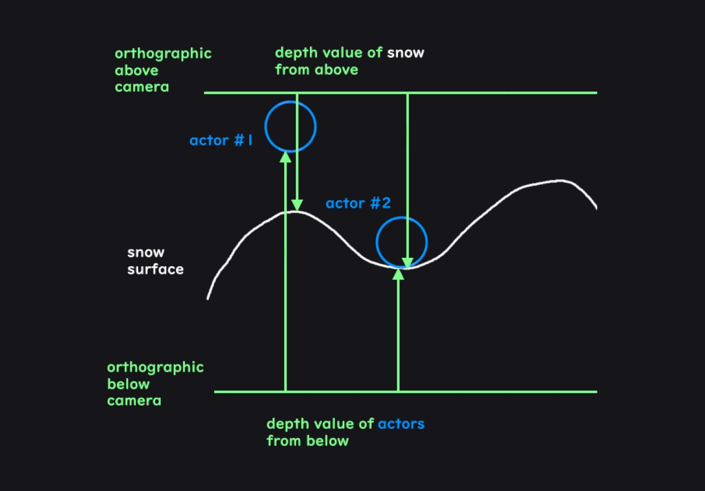
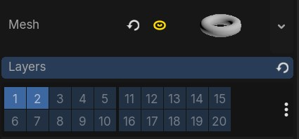
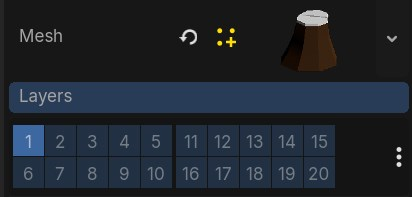
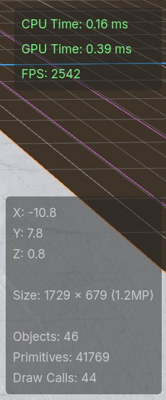
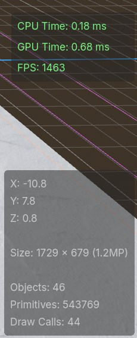

First Steps in Snow Shader
Welcome to my first post in a series where I write a snow shader! The current state of my shader looks like this:
The demonstration here is a little basic, but you can see how the ground reacts to nearby objects pressing down on the snow and making indentations. As time passes, the snow also gets filled back in. There is a 3D effect of the snow getting pushed down, which is a parallax effect done in a fragment shader instead of moving the vertices in the mesh
I'll be going over a few key points in my initial implementation of this effect as well as some of the computer graphics, gpu programming, and graphics API concepts behind it. This project was made in Godot, but plenty of these ideas apply to other game engines as well. The code for the Godot project is linked at the bottom of this post
The inspiration for this shader
I started creating this snow shader as a learning exercise in trying to replicate the following effect from Genshin Impact:
Specifically, I wanted to recreate the way the sand follows the character movements accurately and how the sand gets pushed around with a 3D parallax effect. Since Genshin Impact is meant to run on mobile devices we know that the shader is reasonably performant too, so I tried to keep performance in mind when thinking about the technical approach
To mix things up a little bit I decided to create this effect on snow, but of course with some parameter tweaks and color/texture change we could replicate the sand effect as well
Using physics collisions to get impact locations
The first thing we'll need to figure out is how to capture the impact location of objects against the snow surface. My initial idea for this was to use the built-in physics already happening with collisions against the ground. We could grab the location of collisions on the snow surface essentially for free, and then pass those coordinates to the shader as an array of Vector2s
Implementing this was fairly straightforward and easy to do, and visualizing these points in a basic shader resulted in the following:
While this approach is pretty performant and works at a basic level, the drawback here is that the resolution of objects impacting the ground is limited to a single point. With these single points the best we can do is have uniformly shaped impacts, which you can see in the video
Another major flaw with this approach is that not all collisions will necessarily match to the visuals of the mesh. We would get the wrong area of impact with a capsule shaped collision on a human shaped mesh
So in order to get the look we're going for, we'll need a different approach
Using the depth buffer for impact locations
The approach I've gone with instead is to get the distance between the objects and snow surface using the depth buffer from two orthographic cameras
The depth buffer is used in the graphics pipeline to keep track of the depth of 3D objects at each pixel during the process of drawing the fragments of each triangle. These depth values are tracked to prevent "overdraw" by testing new drawn objects against what exists in the depth buffer at each pixel. If the object isn't closer to the camera than what exists in the buffer, then we can skip that pixel since it's behind an object that's already drawn
Aside from the purpose described just now, we can make use of the values in this depth buffer to get the data we need. One orthographic camera can be placed below the scene to get the depth of the objects close to the snow and another orthographic camera can be placed above the ground to get the depth of the snow surface itself. Given the depth of the objects and the depth of the surface we'll be able to know how close each object is to the surface

It might seem expensive to render the scene from two new perspectives, but so long as we disable everything we don't need it'll actually be fairly cheap. All we need are the depth values, so we can disable expensive effects like lighting and shadows. The resulting render from our cameras will be far more lightweight than a normal render pass
We can also configure the cameras to only render meshes that are on a specific mask layer. We'll need to configure models like our player and interactive objects to be on this mask layer, but once we do we can isolate this effect to only a few important meshes and exclude everything else. Reducing the amount of meshes each camera renders will reduce the amount of triangles that need to be rendered in the graphics pipeline which should keep this effect performant


Getting the depth texture in Godot
Now that we've thought through the design of how we're going to use two cameras to get the impact location, it's time to actually implement it. In Godot there are two main ways to get our cameras to output the values of the depth buffer as a depth texture
One way is to use a quad mesh with a vertex shader that moves the vertices of the mesh to cover the view of the camera and then display the depth texture on that mesh. Instructions for doing that can be found on the Godot wiki here:
https://docs.godotengine.org/en/stable/tutorials/shaders/advanced_postprocessing.html
Another way is to use the Compositor which lets you to run compute shaders for post processing effects on a viewport. "Compositor Effects" can be defined with custom classes in script and then added to the compositor on our cameras
Either method works fine, though I found the compositor to be a little easier to work with because it isolates the effect to the cameras. The quad mesh applies itself to the editor camera as well which hinders visibility, and if you disable it when editing the scene then you can't view the output for debugging
The compositor interacts with the lower level Godot graphics APIs more directly, so we'll need to compile the shader code, create the pipeline, bind the textures to GPU memory, and dispatch the compute command list ourselves
var shader_file := # res://scripts/depth_effect.glsl
var shader_spirv: RDShaderSPIRV = shader_file.
shader = rd.
if shader.:
pipeline = rd.
In the above code we can see an example of what Godot's lower level "RenderingServer" API looks, which at times resembles the vulkan graphics API. It's generally much simpler than how the vulkan API may look but still gives us access to very powerful lower level graphics APIs
We first load the shader as SPIR-V, which is a standardized intermediate shader representation, and compile it. After that we create a compute pipeline object which defines a pipeline for doing compute shader work. This compute pipeline allows us to run a compute shader without needing to go through all of the steps of a traditional graphics pipeline
var color_image: RID = render_scene_buffers.
var depth_texture: RID = render_scene_buffers.
var color_uniform := RDUniform.
color_uniform.uniform_type = RenderingDevice.UNIFORM_TYPE_IMAGE
color_uniform.binding = 0
color_uniform.
var depth_uniform := RDUniform.
depth_uniform.uniform_type = RenderingDevice.UNIFORM_TYPE_SAMPLER_WITH_TEXTURE
depth_uniform.binding = 1
depth_uniform.
depth_uniform.
var uniform_set := UniformSetCacheRD.
We then bind what we need to GPU memory. Here we're binding an "image" and a "sampler with texture" to a set. The "texture" contains the data of our texture and the sampler defines how we read it. An image can be both written to and read from, and the color_texture here is both the input of the viewport as well as the image output we will be writing to
The data for these resources exist in GPU memory and here in the code on the CPU side we have a handle to those resources in the form of an RID. Godot uses these RIDs at a lower level to handle resources. Reading data from the GPU to the CPU can incur a large cost but we can avoid that by managing GPU memory with these RID handles on the CPU side. In our case we want to get the depth texture from our camera and use it in a shader, and despite the above code running on the CPU, no data syncing was necessary
var compute_list := rd.
rd.
rd.
rd., push_constant. * 4)
rd.
rd.
Lastly, we set up a compute list with our data and shader and dispatch it
The two orthographic cameras will now display the depth texture of what they can see. To capture this output, I've added the cameras as children of two SubViewport nodes which will let us write the output of the cameras to a render texture. This texture will be available to select in other nodes' texture properties
Further processing the "impact" texture
So from here we could pass these depth textures directly into the final snow shader on the ground mesh, but I decided to further process them as a separate step and then output a snow "impact" texture. Shader debugging can get pretty messy since we can't use a debugger in shader code or print out values, so this intermediary step will help verify that the inputs to the final part of our snow shader look right
This impact texture will hold information at each pixel of what the height of the snow should be. A value of 1.0 will be max snow height and a value of 0 will be the floor of the snow height
So first we'll compare the two depth textures we have to determine if the objects are close to the snow surface. If an object is close to the snow surface we'll output a 0 and if the object is far we'll output a number closer to 1 or just output 1 if there are no objects near the snow surface
Once we've compared the depth textures in this way, we will have a texture representing the height of snow
For a better looking effect I've also blurred the edges to make the impact location look more smooth, kept track of the output of previous frame to show a trail of impacted snow over time, and also made it so the texture will slowly turn back white to refill the snow after time as passed
And with that we get the following result:
Impacted snow parallax effect
Now with the impact map ready as an input, we can create the actual visual effect for the snow ground. This effect involves making the ground look like snow is getting indented and pushed around. There's two approaches we can take for achieving this effect, one is to do this in a vertex shader and the other is to do this in a fragment shader
In a vertex shader, we can use the impact map as a displacement map and move vertices up in space based on the value of the map. This effect looks like this:
Since the actual mesh vertices are moving and the geometry is being deformed, the snow dent is spatially accurate without needing any visual tricks. It does require a decent amount of vertices in the mesh for the effect to look good however, which are vertices that the mesh otherwise wouldn't have needed to define its original shape. These extra vertices will reduce performance since each triangle will add GPU memory usage and GPU processing time for things like transformations, fragment interpolation, and culling. Each additional triangle adds a very tiny cost, but in large quantities it adds up
The other approach would be to try to create the snow indentation in the fragment shader instead. One way to do this is to use parallax mapping, which looks generally good in most scenarios except for up close at harsh grazing angles. For a snow footprint effect, those limitations aren't an issue. The result looks like this:
For this parallax mapping effect I used an existing implementation online for reference, though the original code was written for use in the node based shader editor which I've adapted to use in gdshader code:
https://godotshaders.com/shader/bumpoffset-visualshadernode-4-4/
This effect looks smoother than the vertex displacement approach and doesn't need to add any extra vertices to the ground mesh. This shader will run for every fragment however and since the ground will likely take up a large portion of the screen, the amount of fragments will often largely outnumber the amount of vertices
Hypothetically both approaches have their pros and cons on performance. With some rough profiling in different scenarios like at a grazing angle, filling the screen with the ground, and having the camera far away, it seems like the fragment shader with parallax mapping does around 70% better (~2500 fps vs ~1500 fps) than the vertex shader displacement map with a 500x500 grid of quads (500,000 primitives)


Ultimately I decided to go with the fragment shader approach because it has better performance, doesn't need to add extraneous geometry, and looks smoother
The final result
And so we have the current state of the effect!
I think this works well as a proof of concept but from here there are quite a few things that I want to add and tweak to this effect
One issue of this effect right now is that it is not framerate independent. Shaders will run every frame, so the shader code for filling impacted snow will vary in speed depending on FPS. Someone playing on 60 FPS will get half the snow regeneration speed of someone playing on 120 FPS for example
Another thing that I want to do is take out the two front and back texture shaders I'm using and combine them into one compute shader. I originally tried using just one texture shader in Godot to render to and read from, but it doesn't seem like that's supported for subviewports in Godot. If we were to use an "image" in a compute shader however, then we could just use one texture and reduce the amount of video memory we use for this effect
Another big improvement we could look into is changing the above and below cameras to follow the character / snow objects instead of be tied to the mesh itself. This would decrease the amount of memory we need to store depth information for the impact locations since the cameras only need to capture the range of motion for each actor vs the entire snow ground. Then, the snow mesh shaders would read from these textures and match the global coordinates with it's own global coordinate for each fragment
There's also still a few visual details missing from the Genshin shader that I'd like to add. The Genshin shader has lighting inside of the indentation, there's a bump around the edges of the indentation, and there's also a general nonuniform bumpiness that gives the indentations a more organic/realistic look
Finally, I'd like to improve the usability of this effect in Godot. Ideally, knowing the inner workings of this shader shouldn't be necessary for it's use and it should be simple and intuitive to apply to meshes. I'm thinking it could be either instantiated as a scene with a way to define the mesh, or perhaps it can be a component node that when attached to a mesh will apply the effect
I think ultimately at some point I'd like to get this in a decent state and publish it to the Godot asset library
That's it for now though on what this shader looks like in its current state. Until next time!
Github Link: https://github.com/BradleyCai/snow-shader